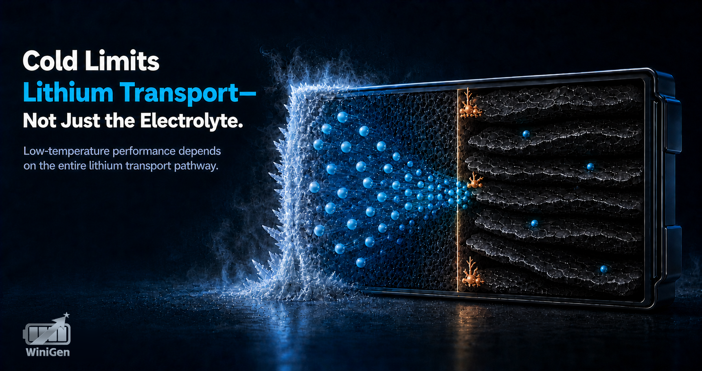

Electrolytes
Ultra-Low-Temperature Lithium-Ion Cell Design: Electrolyte Kinetics, Electrode Architecture, and Rechargeability
A technical systems framework for ultra-low-temperature cell energy, power, and rechargeability below −20°C, including operation below −60°C.
23 min read · estimated